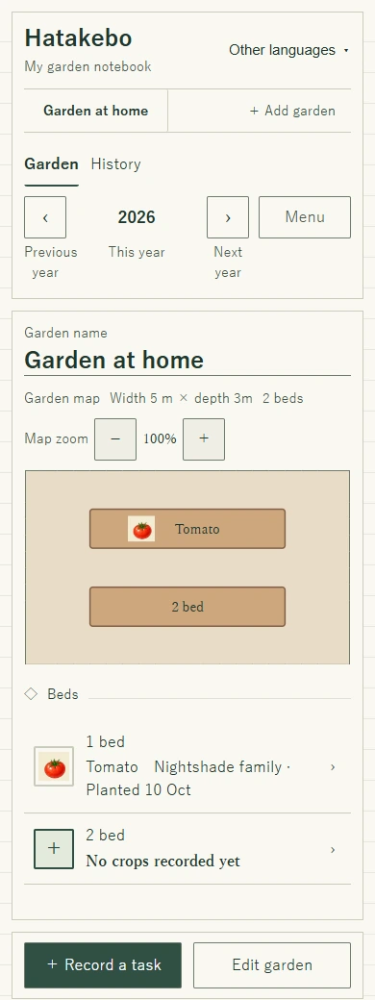
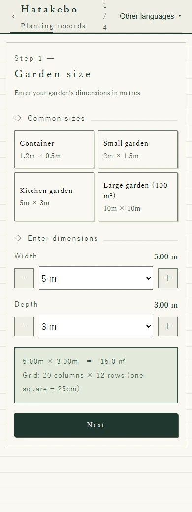
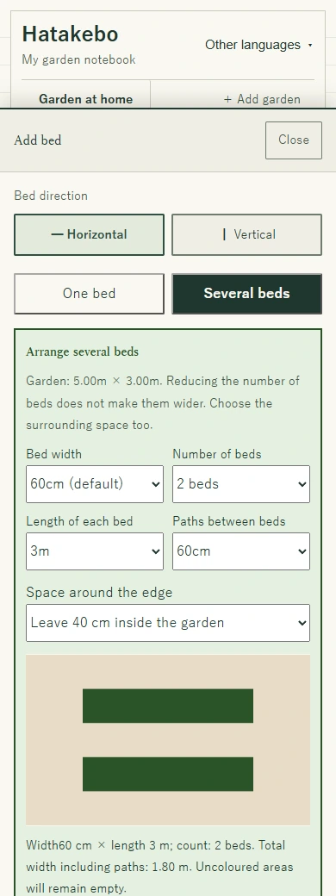
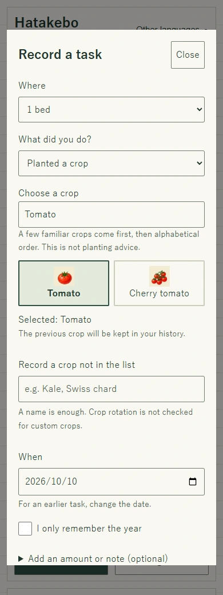
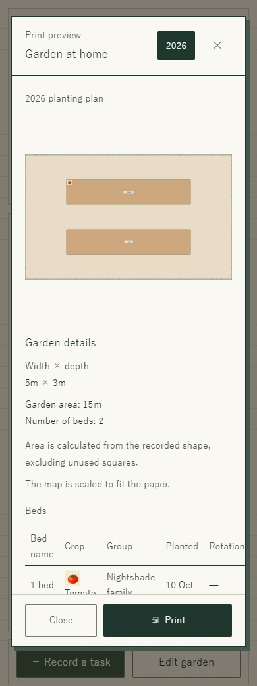
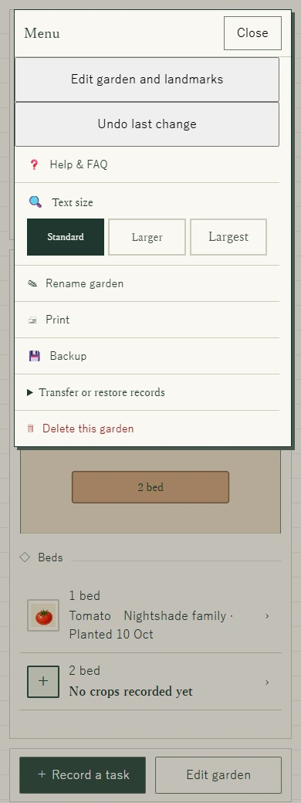

Your first garden · Screenshot guide
How to plan your vegetable garden and beds
Start with one plot. Add your beds. Keep a record of what you plant.
You do not have to draw everything in one go. This guide takes you from an empty notebook to two growing beds, with a tomato recorded in one of them. Use the same buttons on a phone or computer—no dragging is needed.
Here is what you will make
A 5 × 3 metre garden called Garden at home, with two horizontal beds. The first bed contains a tomato; the second stays empty. The sizes, crop and date are examples of using the app, not planting or spacing advice.
Open Hatakebo in another tabKeep this guide open while you try the steps.

Before you start
Measure the width and depth of the area you can use. Leave shared paths outside your plot and allow room to walk and reach your plants. For an allotment, check your plot dimensions and the site rules.
Step 1
Set the size and name of your garden
- Open Hatakebo and choose Create a garden.
- Set Width to 5 m and Depth to 3 m, then choose Next. Use your own measurements for your real plot.
- On the shape screen, leave the rectangle as it is for this example. For an irregular plot, tap the squares you do not use. Choose Next.
- Add nearby landmarks if you want, or simply choose Next.
- Enter Garden at home, choose Create this garden, then Open my garden. If a short tour appears, you may follow it or choose Skip.

Step 2
Leave room for beds and paths
- In your empty garden, choose ＋ Add bed.
- Choose Horizontal, then Several beds.
- Set the dimensions below and check the preview.
- Scroll down and choose Create 2 beds in this layout. If you are still editing, choose Finish editing.
- Bed width
- 60 cm
- Number of beds
- 2
- Length of each bed
- 3 m
- Paths between beds
- 60 cm
- Space around the edge
- Leave 40 cm inside the garden
Two 60 cm beds plus a 60 cm path use 1.8 m. Adding 40 cm on each side makes 2.6 m, within the 3 m depth. Along the other direction, 3 m plus two 40 cm margins makes 3.8 m, within the 5 m width.

Step 3
Record what you planted
- Choose ＋ Record a task. Under Where, select the first bed (shown as 1 bed in this example).
- Under What did you do?, choose Planted a crop.
- Search for Tomato and choose its picture. You can also start from a bed on the map or in the bed list.
- Check When. It starts as today; change it if you planted earlier.
- Scroll down and choose Save entry. The tomato now appears on the map. Leave the other bed empty until you need it.
The crop order is a shortcut for finding plants, not advice on when to plant. For compost, fertiliser, green manure or other notes, return to Record a task and choose the relevant activity. A later planting on the same bed keeps the previous crop in its history.

Step 4
Take a copy of your plan outside
Choose Hatakebo Simple for an A4 landscape map and crop list, or Hatakebo Diary for A4 portrait crop writing cards and yearly records by bed. Both have a light grid. Choose colour or black and white in your print settings. A title and memo are optional.
Simple includes the selected year’s map, crop list and rotation indicators, but not activity history. Diary includes planting and activity records for the selected year; shared entries such as fertiliser and notes appear with each bed. Diary does not include rotation checks. Longer records continue onto more pages.
- Choose Menu → Print.
- Check the garden name, year, map and bed list in the preview.
- Choose Print at the bottom. In your browser or device’s print dialogue, choose a printer—or Save as PDF if available.
The map fits the page; it is not printed at the garden’s real-world size. Dimensions and area are shown beside or below it.

Step 5
Keep a backup and get ready to go offline
- Choose Menu → Backup and check that the file has downloaded. Keep a copy on another device or storage medium.
- To move records, open Transfer or restore records → Import backup on the destination device. Importing replaces its existing records; save those first if you need them.
- Before going outside, open the English app while connected and wait for Ready to use offline. You can then reopen it and record tasks on the same device and browser without a signal.
Your records stay in this browser, without a Hatakebo server copy or automatic device sync. Do not clear the site’s data. Printing or saving a PDF gives you a readable copy, not a backup you can import.
